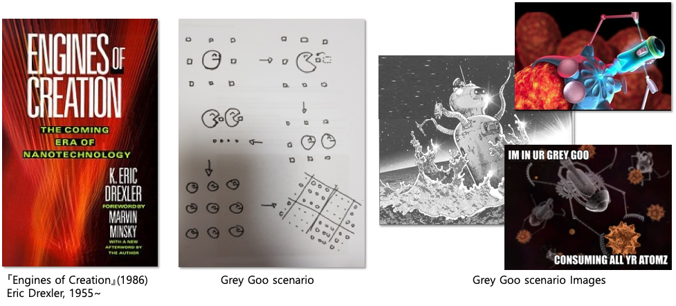
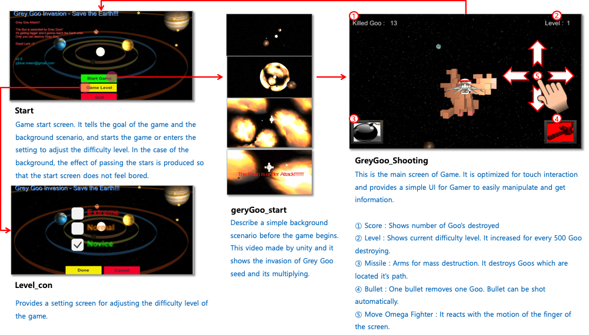
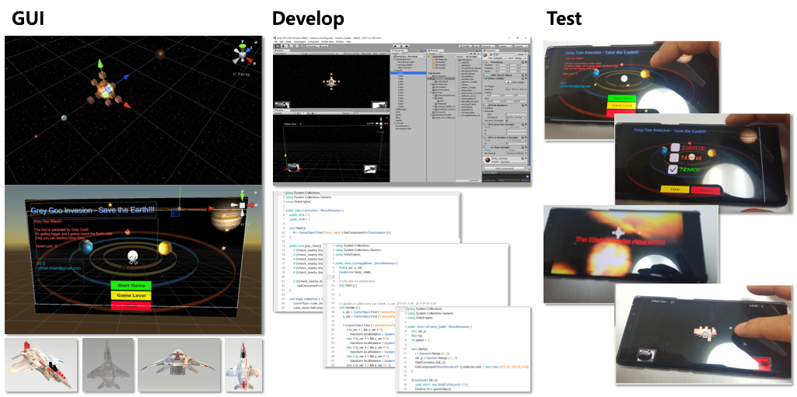
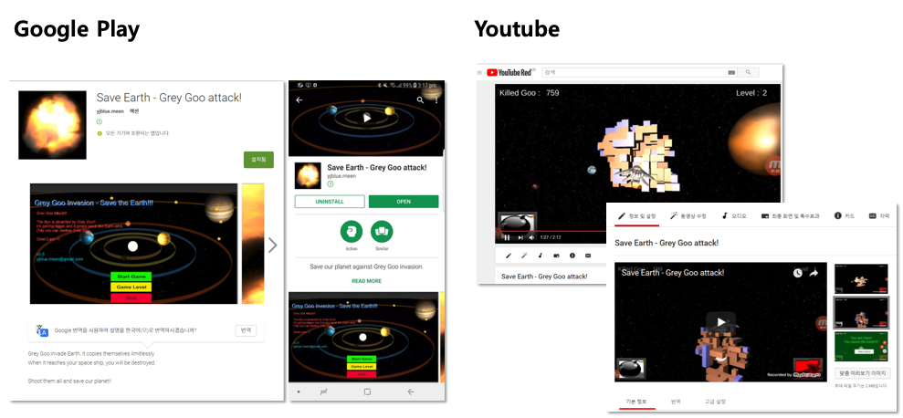

Introduce
Apr.2017 ~ Jun.2017
Description
3D Shooting game created by Unity 3D. The game begins in Gray Goo, which has been infiltrated from outer space and parasitized into the sun. Gray Goo, an infinitely proliferating Cube, expands its territory and eventually threatens the Earth's orbit. The goal of this game is to destroy all of them with the Omega fighter – a space ship. This project was my personal project and I was in charge of Planning, Design, Develop, Test & Distribute. It was a great opportunity for me to experience the series of experiences that I have experienced in the project everyday in the software industry, and I was able to broaden my perspective to the outside of the UX design work.
Role: Planning, Game Design, Game Develop, UX-UI&GUI, Branding, Promotion
Background

Personally, I am interested in science, astrophysics, and SF scenarios. As I was studying Unity 3D, I used the physical system of the Unity engine to enjoy various virtual experiments. Gray Goo is one of the dooms day scenarios proposed by Eric Drexler, in which a small nano-machine propagates infinitely, creating its own replicators, and eventually covering the surface of the planet, destroying humankind. This project started from trying to implement this situation in the game.
Initially I aimed to simply implement Gray Goo. Itself. I succeeded in making a cube that multiplies infinitely, and then based on this, I made a game by adding a Game scenario. The Gray Goo scenario is a dooms day scenario, and I also have planned a scenario that the world destructed by Gray Goo. And in this game, gamers will fighting to prevent it.
Game Design 1
Start
The Grey Goo seed that invaded from outer space begins to paralyze the sun. Grey Goo soon created his own replicas and widen their territory.
How Grey Goo works
Grey Goo can grow in all directions. At a random time, it will multiply in a random direction.
Fail scenario
When Grey Goo widens the area and invades the Earth's orbit, it collides with the Earth. This destroys the Earth, and Gamer is defeated because he/she can not stop the destruction of the world
Win scenario
If Gamer destroys all Grey Goo before destroying the Earth, Gamer successfully complete the mission.
Game Design 2
Characters
-
Behavior
- Can move up and down, left and right around Grey goo (Touch interaction)
- User is able to observe Grey Goo in View of Pilot. The perspective changes each time it moves. The effect of tilting the plane in the direction of movement when moving is also applied
- There are two types of weapons: Bullet and Missile. Designed to move forward, disappearing beyond a certain range
- Bullet : Tiny and Fast. Shooting available any time. A Bullet will destroy a Cube at once.
- Missile : Big and slow moving. Destroy every cube in the its pathway. Unable to shoot it until it’s disappeared.
-
Behavior
- Orbital motion around the sun, but the height of the orbit changes slightly
- Moving with Mars and Jupiter, destroying the moment of contact with the Cube
- Therefore, the user must destroy all of the cube before Earth touches the cube.
The most accomplished part of creating this game was the Gray Goo character design. At what speed, in what direction to multiply, in what conditions it needed a detailed definition of what to stop the proliferation and destroy under what conditions. This is directly related to Game difficulty, so the game's difficulty has changed a lot due to the slight differences. Gamer has been able to enjoy the game at the pilot point by linking Camera to Space Ship. I focused on adjusting the game speed to adjust the launch speed of the bullet and missile and making the feel of hitting the Gray Goo with a weapon. The Earth is a character that gamer must protect, designed to revolve around the sun. However, in order to give unexpectedness of the game, the height of the rotating orbit is designed to change randomly.
Game Design 3
Information Architecture
Game Develop & Distribute
 Download: https://play.google.com/store/apps/details?id=com.Company.GreyGooShooting
Youtube: https://www.youtube.com/watch?v=sf-votK9SIs&t=1s
I started to make games according to Game Design. With Unity 3D, I made a whole screen layout, and designed characters.
For Omega fighters, Gamer's avatar, I made 3D object using Paint 3D.
I have defined a code based action so that each character can operate as intended. I derive the optimum value through several iteration, and based on this, the game is completed.
Finally, I checked the actual device to see if it worked as intended through the test.
As last step, I published this game. I choose Android platform to run this game since this platform is most common in Korea and people around me can easily access. Also I made and upload movie clip to promote this game.